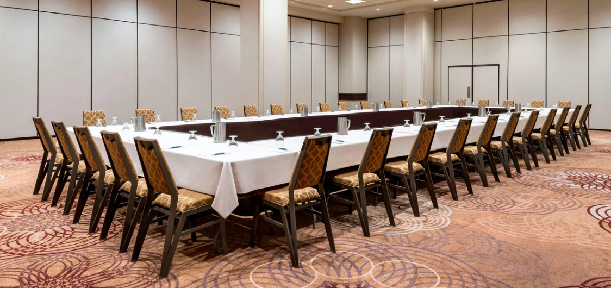

Venue and Location
Canada Model United Nations (CANMUN) will be held at the Sheraton Centre Toronto Hotel, located at 123 Queen St W, Toronto, Ontario, Canada. The Sheraton Centre is the largest conference venue in downtown Toronto and provides a world-class environment for conferences and events.
The Sheraton Centre is highly accessible, with multiple transport options available, including the subway, bus, train, or a short walk from many downtown locations. This convenient location ensures that delegates can easily access the conference venue and enjoy all that downtown Toronto has to offer.
In addition, the Sheraton Centre is located in the heart of downtown Toronto, providing easy access to a wide range of food and amenities. Delegates will have plenty of options for dining, shopping, and entertainment, making their stay comfortable and enjoyable.
Overall, the Sheraton Centre provides a convenient and comfortable location for Canada Model United Nations. With its world-class meeting rooms and convenient location, delegates can look forward to a successful and engaging conference experience.
Located in the heart of Downtown Toronto, the Sheraton Centre Toronto Hotel is the ideal venue for the 2024 Canada Model United Nations conference. From picturesque views of the Toronto skyline to a mere 10-minute walk from the world-renowned Yonge and Dundas Square, there will be plenty to explore before, during, and after the conference.
Meeting Rooms
The meeting rooms at the Sheraton Centre Toronto Hotel in downtown Toronto are spacious, modern, and designed to provide a comfortable and professional environment for conferences and events. The rooms are equipped with advanced audio-visual equipment, high-speed internet connectivity, and comfortable seating arrangements. The lighting is adjustable, allowing for optimal visibility and creating a welcoming atmosphere.The meeting rooms at the Sheraton Centre Toronto Hotel in downtown Toronto are spacious, modern, and designed to provide a comfortable and professional environment for conferences and events. The rooms are equipped with advanced audio-visual equipment, high-speed internet connectivity, and comfortable seating arrangements. The lighting is adjustable, allowing for optimal visibility and creating a welcoming atmosphere.

The general environment at the Sheraton Centre is elegant and sophisticated, with beautiful decor and comfortable furnishings. The hotel lobby is spacious and welcoming, with a large reception area, comfortable seating, and beautiful views of the surrounding city. The hotel is designed to provide a relaxing and enjoyable experience for guests, with amenities that include an indoor pool, fitness center, and spa.
The meeting rooms and general environment at the Sheraton Centre are ideal for hosting a Model United Nations conference, providing a professional and comfortable setting for delegates to engage in productive discussions and negotiations. The hotel's central location in downtown Toronto makes it easily accessible by various transportation methods, including the subway, bus, and train. Additionally, the hotel is surrounded by a wide range of restaurants, shops, and entertainment options, providing plenty of opportunities for delegates to relax and enjoy the city during their stay.
Guest Rooms
The guest rooms at the Sheraton Centre Toronto Hotel in downtown Toronto are spacious, comfortable, and designed to provide a relaxing and enjoyable stay for guests. The rooms are elegantly decorated with modern furnishings and feature large windows that provide stunning views of the city.
Each guest room is equipped with a range of amenities to ensure a comfortable stay, including a flat-screen TV, a comfortable seating area, and a work desk. The beds are plush and luxurious, providing a comfortable night's sleep.
The bathrooms in each guest room are well-appointed and feature modern fixtures and amenities, including a shower/tub combination, plush towels, and complimentary toiletries.
Additional amenities available in the guest rooms at the Sheraton Centre include high-speed internet access, a mini-refrigerator, and coffee/tea making facilities.
Overall, the guest rooms at the Sheraton Centre provide a luxurious and comfortable retreat in the heart of downtown Toronto. With their elegant decor, modern amenities, and stunning city views, the guest rooms are the perfect place to relax and unwind after a busy day of attending conferences, exploring the city, or conducting business.